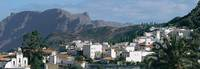

Los viajeros que descendían por el camino real desde la cumbre y entraban en la Caldera de Tirajana, seguramente se debían sorprender por la verticalidad de las paredes que cierran la caldera y que al mismo tiempo esconden este valle de las lluvias que aportan los alisios.
La aridez de los altos y verticales riscos que conforman la Caldera, contrastan con el verdor de los palmerales, que aprovechan la humedad de los profundos barrancos que surcan este curioso espacio.
Información de la ruta:
Dificultad
Media
Duración
1h 15min
Material necesario
Calzado cómodo y agua
Mejor época
Otoño
Itinerario:
San Bartolomé de Tirajana – Rosiana – Santa Lucía de Tirajana
Recorrido:

— Pueblo de Santa Lucía
El inicio del itinerario entre San Bartolomé y Santa Lucía comienza delante de la iglesia de Santiago, de estilo neoclásico y donde se venera una imagen ecuestre de Santiago del siglo XV. Al lado derecho de la iglesia cruzamos la plaza del ayuntamiento para salir por la calle CAPITÁN CORTÉS hasta el final, donde giramos a la derecha hasta llegar al MIRADOR DE LA ORILLA, lugar donde se encuentra el descansillo de los muertos, donde antaño los portadores del féretro descansaban después del pronunciado ascenso hasta la villa.En esta ruta, en cambio, iniciamos el descenso por la cuesta que, después de un par de lazadas, se encuentra con la carretera por la que seguimos recto.
Cuando la carretera gira hacia la derecha,la dejamos para seguir por una pista que baja hacia la derecha, en dirección a ROSIANA y SANTA LUCÍA. Cuando la pista gire hacia la izquierda para entrar en un campo, nosotros continuamos recto, por un camino que conserva parte del empedrado mientras continua bajando. Llegamos a un cruce de pistas hormigonadas y seguimos recto. Esta pista continúa descendiendo suavemente, pasa junto al edifi cio de los BAÑOS PÚBLICOS DE LA MONTAÑA y un pequeño oratorio, el cual dejamos a la derecha.
Delante de una casa con el murete pintado de blanco, nos desviamos y seguimos por la carretera asfaltada de la derecha, que baja primero pero enseguida asciende hasta un pequeño grupo de edifi cios más modernos. Los dejamos a nuestra izquierda, y volvemos a andar entre fi ncas agrícolas hasta una bifurcación con una palmera. Nuestro itinerario continúa por la pista de la izquierda, al lado de la FINCA LA SOLANA.
Al llegar al cruce, giramos hacia la izquierda,en dirección contraria a la señal de madera, por una pista que gana altura decisivamente. Llegamos a Santa Lucía, cruzamos la carretera y por la calle PÉREZ DEL TORO accedemos a la plaza de Santa Lucía, donde se encuentra la iglesia.Si queremos volver en guagua, tenemos dos paradas, una antes de la calle Pérez del Toro y la otra bajando hasta la carretera por las escaleras de la derecha, que debemos seguir hasta la casa museo del Hao, con forma de castillo. Esta ruta conecta con la ruta de Santa Lucía a Agüimes, de 16.17 km y tiempo de marcha 4 h 40 min.